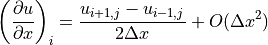
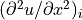
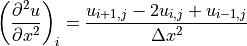
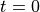
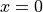
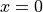
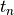
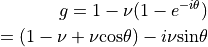
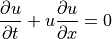

差分法の基礎¶
- 著者
松元亮治（千葉大学）
流体・磁気流体方程式を差分法を用いて数値的に解く際に必要になる基礎的事項について解説する。波の伝播をあらわす線形移流方程式や非線形のBurgers方程式をとりあげ、差分解法の数値的な安定性や数値振動について論じる。特に、数値的な安定性に優れ、非物理的な数値振動を起こさない差分法として風上差分法を紹介する。
差分近似¶
変数  が空間座標
が空間座標  に依存するという2次元問題を考える。
に依存するという2次元問題を考える。
2次元メッシュの図¶
2次元空間を図のような格子に区切り、各格子点の座標を とする。格子間隔は  方向が
方向が  、
、  方向が とする。 、 である。以下、格子点番号 を用いて のように略記する。
方向が とする。 、 である。以下、格子点番号 を用いて のように略記する。
着目している点 のまわりでテイラー展開すると、
(1)¶
(2)¶
(3)¶
したがって、
(4)¶
すなわち、 点における の 方向の微分係数 が の誤差を含む近似のもとで( について2次の精度で)以下のように求まる。
(5)¶
これを中心差分の式と言う。
同様にして、 について1次の精度で以下の差分近似式が得られる。
前進差分：
(6)¶
後退差分：
(7)¶
(8)¶
したがって、
(9)¶
これより、 の に関する2階微分の係数  を について2次の精度で以下のように近似することができる。
(10)¶
同様に、
(11)¶
線形スカラー移流方程式の差分解法¶
１次元線形スカラー移流方程式¶
流体・磁気流体方程式の本質は波の伝播にある。この部分だけを取り出して次のような方程式を考える。
(12)¶
ただし、  は定数で とする。この方程式は、スカラー量 の空間分布が、一定の速度 で伝播することをあらわす波動方程式である。
は定数で とする。この方程式は、スカラー量 の空間分布が、一定の速度 で伝播することをあらわす波動方程式である。
方程式 (12) の厳密解は
(13)¶
である。これは、時刻 におけるスカラー量 のプロフィールは  のスカラー量 のプロフィールが形を保って だけ平行移動した形になることをあらわす。
1次元スカラー移流問題の初期条件と時間発展¶
いま、図 1次元スカラー移流問題の初期条件と時間発展 のように初期に で 、  で
で  のように  で不連続な分布を考えてみると での厳密解は右図のような形になる。
のように  で不連続な分布を考えてみると での厳密解は右図のような形になる。
FTCSスキーム¶
1次元線形スカラー移流方程式 (12) を時間について現在の時刻  と  後の時刻
後の時刻  の間で前進差分、空間については中心差分をとって差分化すると次式を得る。ここで、 である。
の間で前進差分、空間については中心差分をとって差分化すると次式を得る。ここで、 である。
(14)¶
このような差分のとり方をFTCSスキーム(Forward in Time and Centered Difference in Space)と言う。これを整理すると、
(15)¶
ここで、  は次式で定義される数であり、 クーラン数 と呼ばれる。
は次式で定義される数であり、 クーラン数 と呼ばれる。
(16)¶
式 (15) の右辺は時刻 での値、左辺は時刻 での値だけで書けている。したがって、時刻 での各格子点での値がわかっていれば直ちに1タイムステップ後(  )の各格子点での値を計算することができる。このような解法のことを 陽解法 と言う。
)の各格子点での値を計算することができる。このような解法のことを 陽解法 と言う。
FTCSスキームにおける変数の依存関係を図示すると図 FTCSスキームにおける変数の依存関係 のようになる。矢印は時刻 の白丸の点の値を計算するのに時刻 の黒丸の格子点の値を使うことを示す。
1次元波動伝播のシミュレーションを行うアルゴリズムは一般に次のようになる。
各メッシュ点の座標値 をセットする(メッシュ生成)
各メッシュ点の初期値 をセットする(初期条件)
時刻
 が、あらかじめ決められた終了時刻 に達するまで、あるいは決められた回数だけ、以下を繰り返す
が、あらかじめ決められた終了時刻 に達するまで、あるいは決められた回数だけ、以下を繰り返す
左右の境界を除く各格子点について
左右の境界の値を境界条件から決める。たとえば隣接点と同じ値を入れる (境界条件の適用)
時刻を
左図：FTCSスキームで、初期値として、 に対して 、 に対して とし、クーラン数 で1ステップ、2ステップ、3ステップ計算したときの をプロットした図。右図：50ステップ、100ステップ計算したときの をプロットした図。¶
FTCSスキームを用いて１次元線形スカラー移流方程式を解いた結果を 上図 に示す。波は形を保って伝わらずに振動が発生してしまっている。この振動は物理的な理由で発生しているのではなく、数値的不安定性によるものである。なぜこのような数値振動が発生してしまうのか、次節で説明する。
FTCSスキームの数値的安定性¶
Von Neumannの安定性解析¶
前節のFTCSスキームによって1次元波動伝播のシミュレーションを行ってみると解が激しく振動して数値的に不安定になってしまうことがわかった（ FTCSの結果の図 ）。この不安定性の原因を調べるために
(17)¶
を差分式 (15) に代入してみる。ここで  は、波の波数を
は、波の波数を  として であらわされる量である。たとえば のとき は 安定性解析結果 左図のように2メッシュで1波長の波、 のときは右図のように6メッシュで1波長の波をあらわす。
として であらわされる量である。たとえば のとき は 安定性解析結果 左図のように2メッシュで1波長の波、 のときは右図のように6メッシュで1波長の波をあらわす。
安定性解析結果。メッシュ番号を  としたときの のプロフィール。左図: の場合。右図： の場合。¶
としたときの のプロフィール。左図: の場合。右図： の場合。¶
その結果は
(18)¶
これをもう一度差分式に代入すると
(19)¶
である。ここで、  は虚数単位、
は虚数単位、  は実部をとることをあらわす。以上からわかるように、
は実部をとることをあらわす。以上からわかるように、
(20)¶
が成り立つ。
以上と同様に、式 (17) を複素数に拡張した を差分式 (15) に代入すると
(21)¶
が成り立つ。
差分法(差分スキーム)の数値的安定性を導くひとつの方法として、
(22)¶
を差分式に代入して複素増幅率  を求め、1タイムステップ間の振幅の増幅率
を求め、1タイムステップ間の振幅の増幅率  となる条件を求める方法がある。これを Von Neumann の安定性解析と言う。
となる条件を求める方法がある。これを Von Neumann の安定性解析と言う。
 をFTCS差分式に代入すると
をFTCS差分式に代入すると
(23)¶
したがって
(24)¶
以上の結果より、 の場合を除いてFTCSスキームは常に不安定になる。
テイラー展開による方法¶
差分化した式にテイラー展開を適用して差分式が満たす偏微分方程式を導くことによってもFTCSスキームが数値的に不安定であることを示すことができる。 、 を用いると、
(25)¶
(26)¶
(27)¶
FTCSスキームの差分式
(28)¶
の左辺に (25) 、右辺に (26) 、 (27) を代入すると、
(29)¶
これを整理すると
(30)¶
ここで、解くべき偏微分方程式
(31)¶
より
(32)¶
であることを用いると
(33)¶
右辺が差分化によって新たに加わった項である。右辺第1項は負の拡散係数を持つ拡散項になっている。「正の拡散」は物理量の値のピークをなまらせる働きがあるが、「負の拡散」では物理量が周囲よりもわずかに高い値を持つ部分があるとこのピークがどんどん大きくなるという不安定性を生ずる。
よって、テイラー展開法からもスカラー移流方程式のFTCSスキームは数値的に不安定であることがわかる。
Lax-Friedrich のスキーム¶
この方法ではFTCSスキームの右辺の を で置き換え、以下のように差分化する。
(34)¶
を代入して増幅率 を求めると
(35)¶
したがって
(36)¶
Lax-Friedrichスキームの場合の増幅率 に増幅率 を の関数として極座標 で示す。Lax-Friedrich のスキームでは、クーラン数 が  を満たす場合、安定に計算を進めることができる。この条件のことを Courant, Friedrich, Lewy 条件 ( CFL条件 あるいはクーラン条件)と言う。
を満たす場合、安定に計算を進めることができる。この条件のことを Courant, Friedrich, Lewy 条件 ( CFL条件 あるいはクーラン条件)と言う。
Lax-Friedrichスキームにおける依存関係。破線と点線はそれぞれ 、 の場合の波の伝播を示す。¶
クーラン条件の意味を考えてみよう。差分式 (34) を書き換えると以下の式を得る。
(37)¶
クーラン条件  が満たされている場合、時刻 の値
が満たされている場合、時刻 の値  は の 点の値 と 点の値 の内挿値になっている。 上図 にLax-Friedrichスキームにおける変数の依存関係を示す。実線は時刻 の白丸の格子点の値を計算する際に用いられる時刻 の格子点、破線は の場合、点線は の場合の波の伝播を示す。クーラン条件は 、すなわち時間間隔 の間に波が１メッシュ以上伝わってはいけないことを意味する。 は と だけから計算されるが、時間間隔が となると より外側からも情報が伝わってくるため計算を安定に進めることができなくなるのである。
は の 点の値 と 点の値 の内挿値になっている。 上図 にLax-Friedrichスキームにおける変数の依存関係を示す。実線は時刻 の白丸の格子点の値を計算する際に用いられる時刻 の格子点、破線は の場合、点線は の場合の波の伝播を示す。クーラン条件は 、すなわち時間間隔 の間に波が１メッシュ以上伝わってはいけないことを意味する。 は と だけから計算されるが、時間間隔が となると より外側からも情報が伝わってくるため計算を安定に進めることができなくなるのである。
Lax-Friedrichスキームを用いた１次元線形スカラー移流問題のシミュレーション結果。クーラン数 で50ステップ、100ステップ計算した結果を示す。¶
上図 にLax-Friedrichスキームを用いて１次元線形スカラー移流方程式の解を求めた結果を示す。数値振動のない解が得られている。Lax-Friedrichスキームの欠点は数値散逸が大きく、不連続面が時間とともになまってしまうことである。
1次精度風上差分法¶
図 のように波が正の方向に伝わっている場合を考える。このとき、 点での空間微分を、 点と風上にあたる 点の間の差分で近似する方法が風上差分である。
左図：右方向に伝わる波、右図：1次精度風上差分における依存関係。破線は波による情報の伝達を示す。¶
1次元スカラー移流方程式を時間については前進差分、空間については風上差分として差分化すると、 の場合、以下の差分式を得る。
(38)¶
したがって
(39)¶
右図 に1次精度風上差分における変数の依存関係を示す。黒丸は時刻 の白丸の格子点の値を計算する際に用いられる時刻 の格子点、破線は時刻 に白丸の格子点に到達する波の伝播を示す。
増幅率は
(40)¶
したがって
(41)¶
これより、 の場合、任意の について であり、安定であることがわかる。
風上差分の差分式 (39) は次のようにも書ける。
(42)¶
クーラン条件 が満たされている場合、 は時刻 に 番目の格子点に到達する波の での位置（ 右図 の破線矢印の出発点）における値  を と から線形内挿した値になっている。
を と から線形内挿した値になっている。

1次精度風上差分法を用いた１次元線形スカラー移流問題のシミュレーション結果。左：クーラン数 で50ステップ、100ステップ計算した結果。右： で16ステップ、32ステップ計算した結果。¶
上図 に１次精度風上差分法を用いたシミュレーション結果を示す。

{kind=link}
{kind=link}
{kind=link}
{kind=link}
{kind=link}
{kind=link}
{kind=link}
{kind=link}
{kind=link}
Lax-Wendroffのスキーム¶
Lax-Wendroffスキームはテイラー展開にもとづく差分法であり、以下のようにして導かれる。
(43)¶
右辺第2項、第3項に 、 を代入すると
(44)¶
空間微分 、 をそれぞれ中心差分で近似すると
(45)¶
これがLax-Wendroffスキームである。以上の導出過程からわかるように、Lax-Wendroffスキームは空間、時間についていずれも2次精度の解法になっている。
Lax-Wendroffスキームの安定性をvon Neumannの方法で調べてみる。増幅率は
(46)¶
したがって、
(47)¶
これより、 であれば任意の について であり、安定であることがわかる。
{kind=link}
2段階Lax-Wendroffスキームにおける依存関係。第一段階で時刻 における格子点 、 、 の値から時刻 における格子点  、 の値が計算される。第二段階ではこれらの点の値を用いて時刻 の白丸の格子点の値が求まる。¶
、 の値が計算される。第二段階ではこれらの点の値を用いて時刻 の白丸の格子点の値が求まる。¶
1次元スカラー方程式の場合、Lax-Wendroffスキームは以下のように2段階に分けたスキームと同等である。この方法を 2段階Lax-Wendroff法 と呼ぶ。
(48)¶
(49)¶
これを図示すると 上図 のようになる。
{kind=link}
2段階Lax-Wendroff法による１次元線形スカラー移流方程式のシミュレーション結果。左図：クーラン数 で50ステップ、100ステップ計算した結果。右図：クーラン数 で16ステップ、32ステップ計算した結果。¶
図 にLax-Wendroff法を用いて1次元線形スカラー移流方程式の数値解を求めた結果を示す。Lax-Wendroff法は空間、時間についていずれも2次精度の方法であるが、不連続面近傍で数値振動を生じるという欠点を持つ。これに関して、以下の定理が知られている。
Godunov の定理¶
1次元スカラー移流方程式 に対して、
(50)¶
の形の2次精度以上の精度を持つどのようなスキームも解の単調性を維持することはできない。
ここで、「解の単調性を維持する」とは、時刻 におけるプロフィール が に関して単調増加または単調減少する関数であるならば時刻 における関数 も単調増加または単調減少関数でなければならないことを意味する。たとえば１次精度風上差分の場合、 なら は必ず と の間の値をとるため、もしも なら となり、単調性が維持される。Godunovの定理の証明については、たとえば 藤井 (1994) を参照されたい。
数値振動を抑える方法には以下のものがある。
人工粘性を加える
粘性係数を
として、
(51)¶
(52)¶
とする。拡散係数 は、たとえば以下のように不連続面付近で大きな値をとるように決める。 はパラメータである。
流束制限関数を用いる
これについては後述する。
保存形表示と数値流束¶
1次元スカラー移流方程式
(53)¶
を以下の形に変形する。
(54)¶
ここで、
(55)¶
は流束をあらわす。式 (54) の形を保存形と呼ぶ。
{kind=link}
メッシュ点とメッシュ境界を通って出入りする流束の関係¶
保存形式の物理的意味を考えるために、 図 に四角で囲って示した領域 ( )における保存量 の時間変化を求めてみよう。方程式 (54) を から まで積分すると次式を得る。
(56)¶
したがって、保存量 の積分量
(57)¶
の時間変化は、この時間の間に左右の境界 を通って出入りする流束 の差に等しい。これより次式を得る。
(58)¶
差分式 (58) は保存則を厳密に満たす。これが保存形式を用いる利点である。
メッシュ境界の流束 は各メッシュ点での流束から近似的に計算することができる。これを 数値流束 と言い、 であらわす。各種差分スキームの差分式から数値流束を求めると以下のようになる。
FTCS
(59)¶
Lax-Friedrich
(60)¶
Upwind (風上差分)
(61)¶
この式は、 の場合は
 、 の場合は と一致する。
、 の場合は と一致する。
Lax-Wendroff
(62)¶
Burgers方程式の数値解法¶
ここまでは、移流の速さ が一定の場合の１次元線形スカラー移流方程式を扱ってきた。本節では、以下のような 非線形 波動方程式を差分近似によって解くことを考える。これは、非粘性の場合のBurgers方程式である。
(63)¶
この方程式は流線に沿うラグランジュ微分 を用いると次のように表現できる。
(64)¶
{kind=link}
Burgers方程式の解の様子。ある有限の時刻で後ろからきた粒子が前の粒子に追いつく。¶
粒子的な描像に立てば、この方程式は力を受けていない粒子の運動を記述しており、その解はもちろん である。初期速度分布が正弦波的な場合、 上図 に示すように、振幅が正の領域は 方向に、負の領域は 方向に移動してしだいに波が突っ立ち、有限の時刻で後からきた粒子が前の粒子に追いついてしまう。連続系では空間の１点で速度が多価になることはできないため、このような場合に解に不連続が生じる。
{kind=link}
Burgers方程式を差分法によって解くため、方程式をまず、以下のような保存系に変形する。
(65)¶
これは、流束 が の場合に相当し、各種差分スキームを適用することができる。たとえば１次精度の風上差分法を適用する場合、線形スカラー方程式で移流の速さ が一定である場合には のとき であったことに注意し、メッシュ境界の 点での速さを で近似すると、
のとき、
のとき、
図 に初期に ( , ) のような速度分布を与えた場合のBurgers方程式の解を1次精度の風上差分法で計算した結果を示す。 左図 の場合、初期に であることから予想できるように非線形効果が小さい間の解は波の速さが の場合の線形スカラー移流方程式の解とほぼ一致し、波はほぼその形を保ちながら右側に伝わっていく。 右図 では初期に であり、波は左に伝わる。
{kind=link}
初期に の速度分布から始めた場合のBurgers方程式の数値解。図中の数字は時間ステップ数。１次精度風上差分法で時間きざみは とした。¶
非線形性が強くなる場合のBurgers方程式の数値解の例を 図 に示す。この例では初期に のような速度分布を与え、その後の時間発展を１次精度の風上差分法によって解いた。Burgers方程式の非線形項 の効果により波がしだいに突っ立ち、不連続（衝撃波）が形成されることがわかる。
流束制限関数¶
以上、線形スカラー移流方程式とBurgers方程式を例にして差分解法について解説してきた。１次精度の風上差分法を用いるとこれらの方程式の解にあらわれる不連続面を数値振動を起こすことなくとらえることができる。しかしながら、Godunovの定理が示すように、空間２次精度以上の解法では数値振動があらわれてしまうことがわかった。
Lax-Wendroff法の数値流束を補正することによって、不連続面近傍での振動を抑えることができないかどうか考えてみよう。Lax-Wendroff法の 数値流束は次のようにも書ける。
(66)¶
数値振動が生じない1次精度の風上差分の数値流束は のとき であり、Lax-Wendroff法の数値流束の右辺第1項と一致している。そこで、Lax-Wendroff法の数値流束の右辺第2項を次のように補正してみる。
(67)¶
ここで導入した のことを 流束制限関数 と呼ぶ。数値流束 (67) を差分式 (58) に代入して変形すると次式を得る。
(68)¶
ここで、
(69)¶
である。
{kind=link}
数値振動が生じないようにするために の値を制限する範囲¶
数値振動が生じないようにするために、 図 に示したように が と  の間の値をとるように制限を加えることにしよう。これには、式 (68) の左辺の値を以下のように制限すればよい。
の間の値をとるように制限を加えることにしよう。これには、式 (68) の左辺の値を以下のように制限すればよい。
(70)¶
式 (68) の右辺を代入すると以下の条件を得る。
(71)¶
CFL条件が満たされている場合 なので、
(72)¶
この関係式は、以下のふたつの条件がともに満たされれば成立する。
(73)¶
かつ
(74)¶
この範囲を図示すると 流束制限関数の許容範囲図 の斜線のない領域になる。

流束制限関数 の許容範囲。LWはLax-Wendroffスキームの数値流束に対応する制限関数。minmodは minmod関数。¶
の場合は のみが許される。Lax-Wendroff法の数値流束では (図のLW)であるため、 の領域で許容範囲外となり、数値振動が生じる。図の許容範囲内にある流束制限関数を用いることにより、数値振動が起こらないようにすることができる。その一例は以下のminmod関数(図のminmod)である。
(75)¶
TVDスキーム¶
前節では、数値振動をおさえる方法として流束制限関数を導入した。ここでは、数値振動の発生を定量化する方法について考える。
このために、1次元線形スカラー移流方程式において以下の量を定義する。
(76)¶
この量は波の振幅の総和に等しく、移流方程式の厳密解では波のプロフィールが保たれるため、 である。
以上との類推により、メッシュ点ごとの物理量の変化量の総和を次式のように定義し、これをTotal Variation (TV)と言う。
(77)¶
Total Variation が時間とともに増大しないという条件
(78)¶
のことをTotal Variation Diminishing (TVD)条件と呼ぶ。
流束制限関数を導入することによって、差分スキームがTVD条件を満たすようにすることができる。
放物型方程式の差分解法¶
天体シミュレーションにあらわれる放物型方程式¶
熱伝導方程式
磁気拡散方程式
以下のような1次元拡散方程式を差分近似によって初期値問題として解くことを考えてみよう。すなわち、時刻 における の値 を与えて、任意の時刻 ( )における を求める。
(79)¶
拡散係数 は x に依らないとする。よく知られているように、この方程式の解は初期条件をフーリエ変換することによって解析的に求めることができる。
{kind=link}
拡散方程式の解の時間発展の様子¶
解のおおまかな様子を図に示す。
拡散方程式の陽解法 (explicit法)¶
1次元拡散方程式 (79) を時間について現在の時刻 と 後の時刻 の間で前進差分、空間については中心差分（FTCS差分）をとって差分化すると次式を得る。ここで、 である。
(80)¶
式 (80) を変形して次式を得る
(81)¶
右辺は時刻 での値、左辺は時刻 での値だけで書けている。したがって、時刻 での各格子点での値がわかっていれば直ちに1タイムステップ後( )の各格子点での値を計算することができる（陽解法）。
Von Neumannの安定性解析¶
FTCSスキームの数値的安定性を調べるために をFTCS差分式に代入すると
(82)¶
よって、
(83)¶
増幅率が であるためには
(84)¶
したがって、
(85)¶
任意の (任意の波長の波)について安定であるためには
(86)¶
以上により、FTCSスキームにより1次元拡散方程式のシミュレーションを行う場合、時間ステップ が上式を満たすようにコントロールする必要があることがわかる。たとえばメッシュサイズを半分にした場合、 は1/4にしなければならない。
拡散方程式の陰解法 (implicit法)¶
拡散方程式を差分化する際に右辺の空間差分の部分に、求めるべき での の値を含めて差分化する方法がある。このような方法を 陰解法（implicit法） と呼び、explicit法とは安定性条件が異ってくる。代表的な陰解法である Crank-Nicolson 法では、パラメータ  を導入して、以下のように差分化する。
を導入して、以下のように差分化する。
(87)¶
これを整理すると次のような行列を含む式になる。
(88)¶
これを解いて を求めればよい。
練習問題¶
行列
 とベクトル
とベクトル  の各要素を求めなさい。
の各要素を求めなさい。Von Neumann の安定性解析により、 ならば を満たす任意の
についてCrank-Nicolsonスキームは数値的に安定であることを示しなさい。
参考文献¶
[1]は、数値流体力学全般についてまとめられたテキストであり、必読文献である。